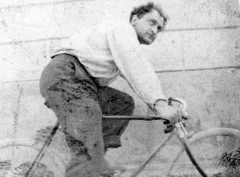
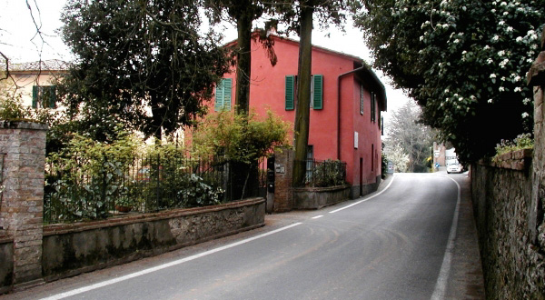
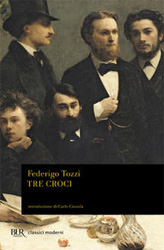
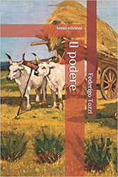
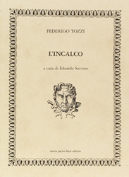

|
| |
Di origini popolane, Federigo Tozzi, nato a Siena il primo giorno del 1883, perse presto la madre Annunziata e durante la giovinezza compì studi in modo disordinato, certo non sostenuto dai contrasti con il padre, conosciuto come “Ghigo del sasso” e gestore di un'osteria presso l’Arco dei Rossi.
Nel 1908 ottenne un impiego alle Ferrovie dello Stato a Pontedera e a Firenze, ma alla scomparsa del padre decise di ritornare a Siena e gestire i pochi beni dominicali avuti in eredità insieme all’attività di ristorazione.

Aveva intanto iniziato a cimentarsi con la poesia (La Zampogna verde) ricca di risonanze Dannunziane, a scrivere racconti e a collaborare con riviste locali fino a fondare nel 1913 una piccola rivista “La Torre” di ispirazione spiritualista e cattolico-reazionaria, forse relativa ad una adesione al socialismo nel periodo giovanile.
Nel 1914, alienato l’ultimo podere in terra senese si trasferì a Roma, dove solo nel 1918, dopo anni difficili ma letterariamente davvero produttivi, divenne redattore del Messaggero della Domenica che gli agevolò la conoscenza sicuramente feconda con Luigi Pirandello.

La sua casa rossa a Poggio al Vento
Solo alla pubblicazione dei romanzi “Con gli occhi chiusi” e “Bestie”, insieme ad alcune novelle, Federigo Tozzi iniziò ad ottenere autorevoli consensi.
Tra le numerose altre opere hanno nel tempo trovato notevole diffusione i romanzi “Tre croci”, “Il podere”, “Gli egoisti” ed il dramma “L’incalco”, usciti postumi alla sua morte per polmonite, avvenuta in Roma il 21 Marzo 1920.
  
|

 ACCADDE OGGI
ACCADDE OGGI